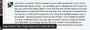

< < < Back
Sara Parker-Toulson Publicly Supported A SJW Who Wishes Rape Upon Roosh’s Future Daughter – Return Of Kings
…but i hope one day you will be the happy father of one [daughter] and that she will be raped…
– Christian Caouette, the very, very logical “anti-rape” advocate who opposes Roosh (and any of his future progeny, clearly). His comment was liked by Parker-Toulson.
Feminist Sara Parker-Toulson, who has already backed a violent threat against Roosh, supported a Facebook post by fellow SJW Christian Caouette, one which expressed a vehement desire for our proprietor’s future daughter to be raped. Clearly enamored by the biased attention she and other delusional SJWs have received from the negligent Montreal and other Canadian media, she now thinks “hate” can be stopped by wishing rape on unborn children.
It is stupendously ironic that a woman who blabbers incessantly about made-up “rape cultures” considers the rape of third parties yet to be born a useful tool for “educating” Roosh and others like us. That somewhere around 30,000 people (as of me writing this sentence) support the petition of someone who herself publicly supports the wishing of rape speaks volumes about the overall SJW mentality. It is pernicious, illiberal (in the fascist sense) and despises any semblance of free speech.

The pro-rape white knight Christian Caouette
Wishing rape on someone’s unborn daughters because they disagree with you. How classy, Christian Caouette.
Christian Caouette (you can find his Facebook profile here), from Amos, Quebec, chooses to white knight for the SJW cause by, er, wishing rape on unborn children. If this is what SJW advocacy has regressed into, we can all sleep more easily at night. The beauty of people like Caouette, plus Parker-Toulson and her false rape threat-generating friend Aurelie Nix, is that they think they can spew their ideological bile with impunity and that massive, irreconcilable contradictions won’t appear in their hate speech.
“The end justifies the means” is the mantra that psychologically buttresses these individuals, even as they support violent threats, wish rape on people not involved with the present debates and make up false rape threats against their philosophical enemies. To them, it’s moral to second violent threats if you’re preaching feminism and claiming your opponents are violent.
It’s moral to fight the rape culture by harboring desires that enemies’ children be raped in the future. It’s moral to say that false rape allegations are “rare” but simultaneously slander your foe by saying he threatened to rape you.
When will Canadian news outlets start reporting the false allegations, threats and rape wishes of the SJWs?

Aurelie Nix is still yet to furnish any “proof” that Roosh threatened to rape her. She has responded to her outing as a false rape threat maker by going offline and fearing a civil suit by Roosh for defamation and libel.
From early August, with the publication of my colleague Quintus Curtius’ article, the intentions of those amongst the SJW crowd have been readily accessible to the uninitiated public, let alone professional “newsmen and newswomen” supposedly dedicated to the “truth.”
In addition to other less salient indications of potential violence against Roosh and his loyal audience, discussions of bomb threats and other nasty plans have taken place in relatively open sight. Yet not even the smallest squeaks about this have come from the keyboards of mainstream Canadian journalists, ranging from the publicly-funded CBC to the Toronto Star, Montreal Gazette, CJAD Radio and others.
There is absolutely zero intention from these outlets to disseminate anything that would call into question what must be the “clean character references” afforded to all SJW ringleaders. Any information backed up by fact cannot be used if it vindicates Roosh and undermines the credibility and “standing” of Parker-Toulson and Nix.
Disgustingly, too, Parker-Toulson is a mother-of-three who is supportive of someone else’s children being raped, all to “make a point” and “teach a lesson.” How open-minded.
We will continue to support the unveiling and dissemination of the truth

Sara Parker-Toulson, Aurelie Nix and Christian Caouette are all members of the same fundamental breed. They bend or even break the rules, advocating for violence, rape and false allegations to forge their ideological ends. “Dexterous” use of information is how they attempt to bury the litany of contradictions and inconsistencies, and the plain hate, they produce. In turn, the full body of information is selectively manipulated by the media to falsely characterize Roosh as a misogynistic fascist caricature.
Nevertheless, the only fascism currently being practiced in Montreal is that promulgated and incited by the organizers of the fraudulent Change.org petition, further ringleaders elsewhere and those supporting them.
As for now, let it be on the record that Sara Parker-Toulson is a supporter of rape for the children of those who dare question that “rape culture” actually exists and the unapologetic defenders of real free speech.
Read More: Feminist Sara Parker-Toulson Supports Violence To Stop Roosh V’s Speech In Montreal


{kind=link}
{kind=link}
{kind=link}